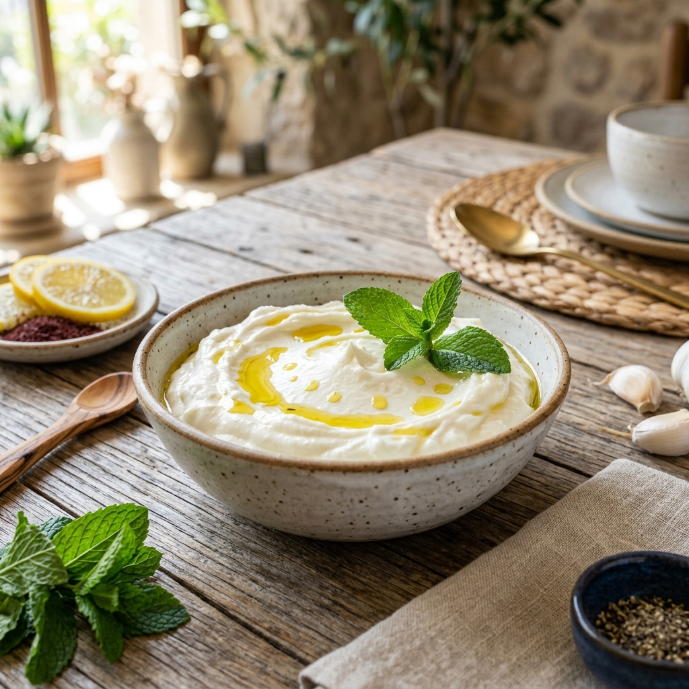

Våra Recept
Upptäck hjärtat i Mellanösterns matkultur. Här har vi samlat våra absolut bästa och mest autentiska recept – från fluffig toum till perfekt hummus. Perfekta tillbehör till våra produkter!

Äkta Libanesisk Toum (Vitlökskräm)
Den perfekta fluffiga vitlökskrämen som är ett absolut måste till kyckling och våra färdiga grillprodukter.
Till receptet